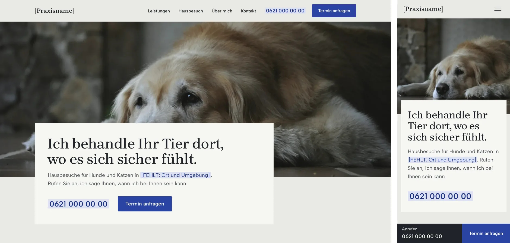
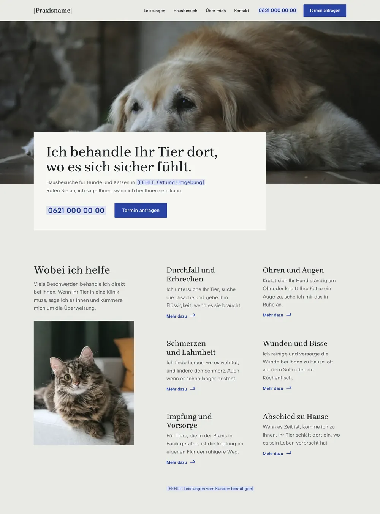
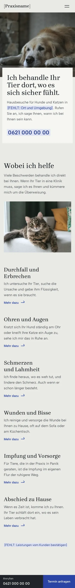
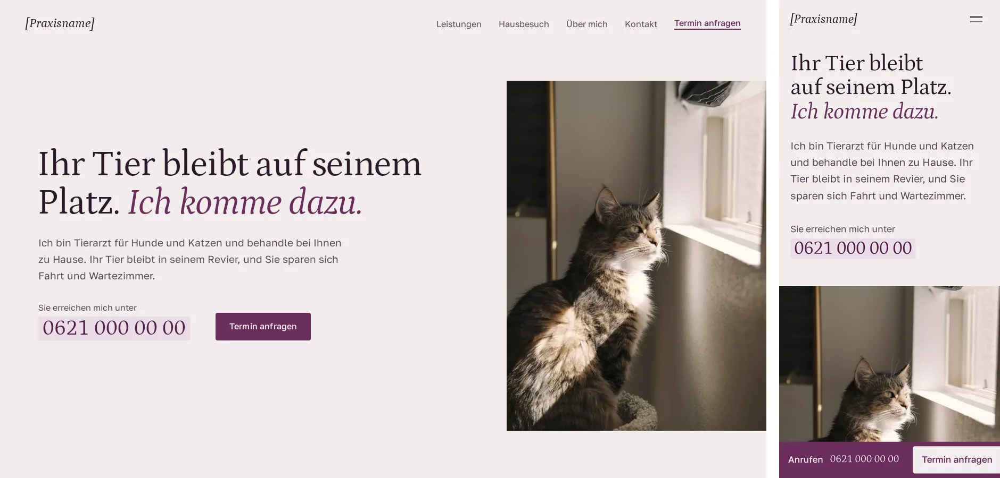
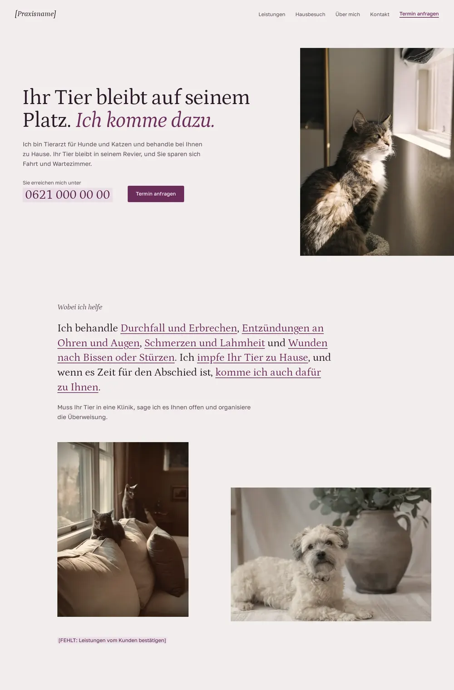
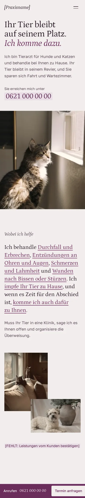
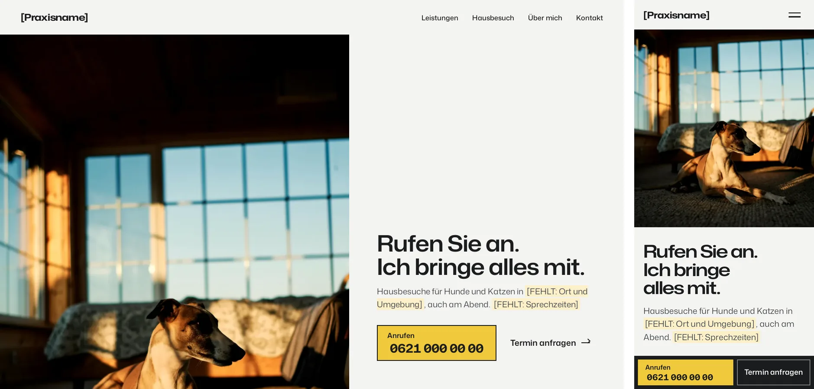
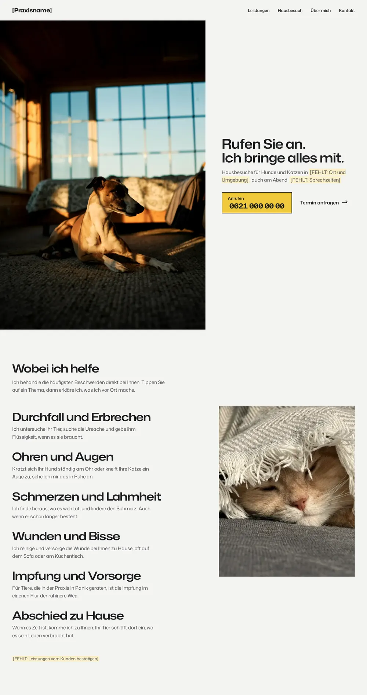
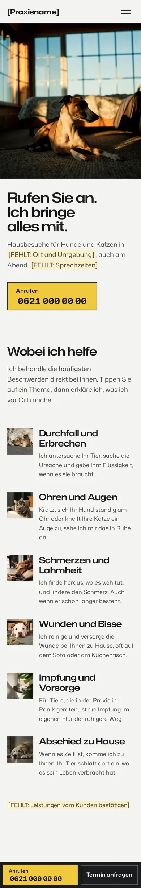

Mobiler Tierarzt · drei Richtungen
Stand 24.10.2026. Jede Richtung hat einen gebauten Startbereich und eine Leistungsübersicht. Die Richtungen lassen sich live öffnen und am Handy durchtippen. Farbig hinterlegte Stellen sind Platzhalter für fehlende Angaben. Die Telefonnummer hat die Länge einer echten Nummer, damit das Layout stimmt.
A
Auf Augenhöhe
Die Kamera liegt auf dem Boden neben dem Tier, und der erste Satz steht auf einer hellen Kalkfläche, die mit harter Kante in das Foto greift.



Palette
- Grundfläche
#E9E9E4 - Tafel
#F6F6F2 - Text
#1F2328 - Nebentext
#4B5058 - Akzent (Anrufen, Termin)
#2B44A3 - Akzent gedrückt
#1E3383 - Markierung
#DCE1F2 - Schrift auf Akzent
#F6F6F2
Kontrast (WCAG)
| text auf grund | 12,97 : 1 | AA Text |
| text auf flaeche | 14,58 : 1 | AA Text |
| leise auf grund | 6,66 : 1 | AA Text |
| leise auf flaeche | 7,49 : 1 | AA Text |
| Schrift auf Akzent auf akzent | 7,88 : 1 | AA Text |
| Schrift auf Akzent auf akzent tief | 10,44 : 1 | AA Text |
| akzent auf grund | 7,01 : 1 | AA Text |
| text auf akzent hell | 12,11 : 1 | AA Text |
Schriftpaar
- Brygada 1918 · Überschriften
Eine Antiqua nach einer polnischen Buchschrift von 1918. Die Federführung ist sichtbar, die Formen bleiben ruhig. Das gibt der Seite eine menschliche Hand ohne Verschnörkelung.
Google Fonts, Projekt github.com/kosmynkab/Brygada-1918 · SIL Open Font License 1.1 - Albert Sans · Text, Nummer, Knöpfe
Eine klare skandinavische Grotesk mit offenen Formen und gut unterscheidbaren Ziffern. Sie trägt lange Texte am Handy und die Telefonnummer.
Google Fonts, Projekt github.com/usted/Albert-Sans · SIL Open Font License 1.1
Fotos
- hund-senior-boden · Linoleum Creative Collective (@linoleum)
- katze-sofa · Adam Stefanca (@adam_stefanca)
Warum edel und warm zugleich
Edel wirkt sie durch Verzicht: eine Kalkfläche, ein Kobaltblau nur für Anrufen und Termin, eine Antiqua mit klarer Federführung, harte Kanten statt Rundungen.
Warm wird sie durch die Perspektive: Jedes Foto ist auf Höhe des Tieres aufgenommen, so sieht die Halterin ihr Tier, wie sie es vom Wohnzimmerboden kennt.
B
Ein ruhiger Brief
Die Seite liest sich wie ein Brief des Tierarztes: ein großer Satz in Petrona, daneben ein hohes Katzenfoto im Fensterlicht, und die Leistungen stehen als ganzer Satz.



Palette
- Grundfläche
#F2EDEC - Tafel
#E7DEDF - Text
#2B1A28 - Nebentext
#5C4858 - Akzent (Anrufen, Termin)
#6C2D5C - Akzent gedrückt
#54214A - Markierung
#EADDE6 - Schrift auf Akzent
#F7F2F1
Kontrast (WCAG)
| text auf grund | 14,13 : 1 | AA Text |
| text auf flaeche | 12,42 : 1 | AA Text |
| leise auf grund | 7,17 : 1 | AA Text |
| leise auf flaeche | 6,31 : 1 | AA Text |
| Schrift auf Akzent auf akzent | 8,73 : 1 | AA Text |
| Schrift auf Akzent auf akzent tief | 11,18 : 1 | AA Text |
| akzent auf grund | 8,35 : 1 | AA Text |
| text auf akzent hell | 12,48 : 1 | AA Text |
Schriftpaar
- Petrona · Überschriften, Leistungssatz, Nummer
Eine Antiqua mit einer Kursive, die nach Handschrift aussieht. Der zweite Satz der Überschrift steht in dieser Kursive, so klingt die Seite wie ein Brief.
Google Fonts, Projekt github.com/RingoSeeber/Petrona · SIL Open Font License 1.1 - Golos Text · Text, Knöpfe
Eine ruhige Grotesk von Paratype, gebaut für Bildschirmtext. Sie bleibt neben der Petrona im Hintergrund.
Google Fonts, Projekt github.com/googlefonts/golos-text · SIL Open Font License 1.1
Fotos
- katze-sonnenfenster · Jonathan Ikemura (@ikemura)
- katzen-sofa-licht · Erica Marsland Huynh (@partyintheshire)
- hund-boden · Lindsey Duncan (@lindseyrose8)
Warum edel und warm zugleich
Edel wirkt sie durch die Typografie: ein einziger großer Satz, eine Antiqua mit Kursive, viel Raum um wenig Text, wie bei einem guten Briefpapier.
Warm wird sie durch die Stimme: Der Tierarzt spricht in ganzen Sätzen zu der Halterin, und das gedämpfte Rosengrau mit Pflaume wirkt wie Abendlicht in einem Zimmer.
C
Licht an
Ein Hund liegt im letzten Abendlicht vor dem Fenster, und das einzige Gelb der Seite ist der Knopf zum Anrufen, wie ein Fenster, hinter dem noch Licht brennt.



Palette
- Grundfläche
#F4F4F1 - Tafel
#E6E6E1 - Text
#1B1C1E - Nebentext
#4A4C51 - Akzent (Anrufen, Termin)
#F0C93A - Akzent gedrückt
#E0B41C - Markierung
#FBF0C8 - Schrift auf Akzent
#1B1C1E
Kontrast (WCAG)
| text auf grund | 15,48 : 1 | AA Text |
| text auf flaeche | 13,62 : 1 | AA Text |
| leise auf grund | 7,80 : 1 | AA Text |
| leise auf flaeche | 6,86 : 1 | AA Text |
| Schrift auf Akzent auf akzent | 10,65 : 1 | AA Text |
| Schrift auf Akzent auf akzent tief | 8,70 : 1 | AA Text |
| akzent auf grund | 1,45 : 1 | nur mit Rand |
| text auf akzent hell | 14,94 : 1 | AA Text |
Schriftpaar
- Mona Sans (breit) · Überschriften, Leistungsliste, Nummer
Eine Grotesk mit Breitenachse. In 112 bis 125 Prozent Breite wirkt sie präzise und selbstbewusst, ohne laut zu werden.
GitHub, github.com/github/mona-sans · SIL Open Font License 1.1, ungekürzt eingebunden wegen des geschützten Namens „Mona“ - Mona Sans (normal) · Text
Dieselbe Familie in normaler Breite für den Fließtext. Eine Familie für alles hält die Richtung streng.
dieselbe Datei · wie oben
Fotos
- hund-fenster · Marius Cern (@mariuscern)
- katze-unter-decke · Alex Mamedov (@alexandrmamedov)
- katze-sofa · Adam Stefanca (@adam_stefanca)
- hund-boden2 · Daniele Franchi (@daniele_franchi)
- hund-teppich · Mike Burke (@themikeburke)
- katze-grau-fenster · Sarah Windeler (@hyggepause)
- hund-senior-boden · Linoleum Creative Collective (@linoleum)
Warum edel und warm zugleich
Edel wirkt sie durch Präzision: eine breite Grotesk in festen Stufen, Porzellanweiß und Ruß, ein einziges Gelb, das nur dort steht, wo Sie handeln.
Warm wird sie durch das Abendlicht in den Fotos und durch den Gedanken dahinter: Hier brennt noch Licht, hier geht jemand ans Telefon.